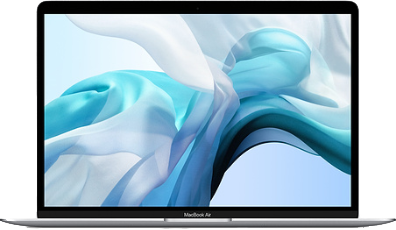

這款最受喜愛的 Mac，即將讓你再次心動不已。全新 MacBook Air 更加纖薄、更為輕盈，現有銀色、太空灰色及金色外觀，並配備亮麗的 Retina 顯示器、Touch ID、最新一代鍵盤，以及力度觸控板。經典的楔形機身採用 100% 再生鋁金屬製成，是迄今最環保的一款 Mac1。再加上擁有滿足一天所需的電池續航力，MacBook Air 正是一部你理想中好攜帶、超厲害的筆記型電腦。
2560 x 1600 解析度具備超過 400 萬像素，呈現結果絕對震撼。影像細緻逼真，臻於全新境界。文字銳利清晰，讓你在閱讀文件、電子郵件和網站內容時，感覺就像看印刷品般。再加上與上一代相比更多 48% 的色彩，眼前所見一切更顯豐富亮麗。顯示器玻璃延伸至機身邊緣，邊框比以往更縮窄 50%，讓你可以專注於螢幕內容，醉心於眼前所見。
Touch ID 先進的安全保護與便利性現已直接內建在 MacBook Air 中。只須將手指放在 Touch ID 感測器上，簡簡單單就能解鎖你的 Mac。你可以用指紋立即存取上鎖的文件、備忘錄與系統設定，不必再輸入另一組密碼。線上購物也更為輕鬆簡單，只要在結帳時選取 Apple Pay，輕輕一觸即可大功告成，無須輸入運送或帳單資訊，更不必擔心信用卡資料洩漏。有了 Touch ID，你的私人資訊就能保有隱私。
MacBook Air 配備 Apple T2 安全晶片，這是 Apple 設計的第二代特製 Mac 晶片，進一步提升了 MacBook Air 的安全保障。因此，當你使用 Touch ID 來解鎖 Mac、認證文件，或是在線上向商家付款，你的資訊都能確保安全無虞。透過即時數據加密，你儲存在 SSD 上的所有資料都會自動且完整加密。且得益於 T2 安全晶片，熟悉的「嘿 Siri」現也來到 MacBook Air，想開啟 app、尋找文件、播放音樂或回答你的問題，隨叫隨到。
最新一代 MacBook Air 的鍵盤採用蝶式結構，提供較傳統剪刀式結構高出四倍的按鍵穩定性，帶來更舒適、更靈敏的使用體驗。獨立 LED 背光按鍵配備環境光度感測器，在低光源環境下打字也沒問題。
力度觸控板讓你依點按力道的細微差異，以各種方式與 Mac 互動。無論點按觸控板的哪一處，你都能精確操控並獲得一致的回應；使用「多點觸控」手勢，如兩指開合與縮放等時，也有更大操作空間。你的手指在此將可收放自如。
全新 MacBook Air 雖輕至 1.25 公斤，卻滿載強大效能。不論是閱讀電子郵件、瀏覽網頁，還是製作 Keynote 簡報或在 iMovie 上作剪接，第八代 Intel Core i5 處理器都能提供動力支援，助你進行日常任務。高達 16GB 記憶體，即使同時開啟多款 app，也能順暢運作；而高達 1.5TB SSD 儲存裝置，讓 app 啟動敏捷俐落，並提供充足的空間供你所有的文件、照片與影片使用。
MacBook Air 具備長達 12 小時的電池續航力，為你一整天的所需提供源源動力。在你查看電子郵件、瀏覽網頁、線上購物、撰寫文件、觀看影片、管理試算表等工作時，都無須插上電源。若要搭乘長程班機飛越大西洋，你可以儘管備妥電影片庫，因為 MacBook Air 播放影片可長達 13 小時，毫不間斷2
Thunderbolt 3 不但擁有超高頻寬，且具備 USB‑C 業界標準的多元用途，是更為強大的通用連接埠；在 MacBook Air 上便配備了兩個。Thunderbolt 3 以一個連接器，整合了資料傳輸、充電和影片輸出等功能，頻寬達 Thunderbolt 2 的兩倍，提供快達 40Gb/s 的傳輸量。要連接現有裝置，也只需要一條連接線或轉接器。此外，Thunderbolt 3 雙面可用，不論以正反面都能輕鬆連接。
Thunderbolt 3 的連接方式，不但速度卓越且用途多元。它的頻寬為 Thunderbolt 2 的兩倍，同時將資料傳輸、影片輸出和充電整合在一個小巧的連接器中。更與 USB-C 整合，除了擁有 Thunderbolt 的飛快速度外，更多了便利性，創造出一個真正通用的連接埠。
Blackmagic Design 精心打造出與具備 Thunderbolt 3 的 Mac 完美契合的兩部外接 GPU (eGPU)2。讓你從此擁有桌上型電腦級的繪圖效能，卻又不失筆記型電腦攜帶的便利性。Blackmagic eGPU 採用一體成型的鋁金屬機身，功能強大但運作安靜，可透過 Thunderbolt 3 為 Mac 充電，並內建 I/O 連接，可同時驅動一部 Thunderbolt 3 顯示器和虛擬實境 (VR) 配件。選擇 Blackmagic eGPU 來加速運行各種專業 app，並盡情享受超流暢的遊戲快感；或選擇 Blackmagic eGPU Pro，透過終極工作站等級的繪圖處理效能，來處理專業 app 的工作流程以及 VR 的內容創作。
Thunderbolt 3 傳輸資料速度快達 40Gb/s，是 Thunderbolt 2 的兩倍，更達到 USB 3 的八倍，可為任何底座、顯示器或裝置提供最快的連接。你還能夠透過單一連接埠菊鏈式串接多達六台 Thunderbolt 裝置，不須使用集線器或交換器。因此，你可以將儲存裝置連接到電腦，再將顯示器連接到儲存裝置，歸功於強大的傳輸能力，一切運作一切如常8。
Thunderbolt 3 的顯示頻寬是 Thunderbolt 2 的兩倍，可讓你的 Mac 支援多達四部 4K 顯示器或多達兩部 5K 顯示器1。透過 15 吋 MacBook Pro 與 iMac Pro 的兩個 Thunderbolt 控制器，讓你可以將圖像傳送到兩部 5K 顯示器，以完美的畫面，進行高解析度照片和影片的編輯或剪輯。Thunderbolt 3 可使用連接線連接到 DisplayPort 顯示器和監視器，或使用轉接器即可支援 HDMI 和 VGA 顯示器。
有了 Thunderbolt 3，一個 USB-C 埠即可進行雙向供電。也就是說，同一個連接埠既可以為其他裝置充電，或接受充電。由於連接埠能提供高達 100 瓦的電力，同一條連接線除了可連接底座或顯示器，還可同時為你的 MacBook Pro 或 MacBook Air 充電。
有了最新的聲音處理與調音技術，MacBook Air 音質更勝以往。與上一代相比，立體聲揚聲器帶來兩倍低音，音量也增加 25%；更寬廣的立體聲讓你在聆聽音樂或觀看電影時，感受如臨其境的音質。高畫質的 FaceTime 相機，讓你的親朋好友可以把你看得清清楚楚、細節分明。三支麥克風形成陣列，在進行 FaceTime 通話、聽寫及與 Siri 對話時，更精準收音。
這款由 Apple 打造的全新鋁合金，無須從地球開採任何新的鋁金屬，就能讓機身具有相同的堅固、耐用性與無瑕外觀。它的設計是利用回收鋁金屬的碎屑，分解成原子等級的微粒子再重組鍛造。我們所得的成果不僅是與過去同等美觀、堅固的機身，且是迄今最環保的一款 Mac1。